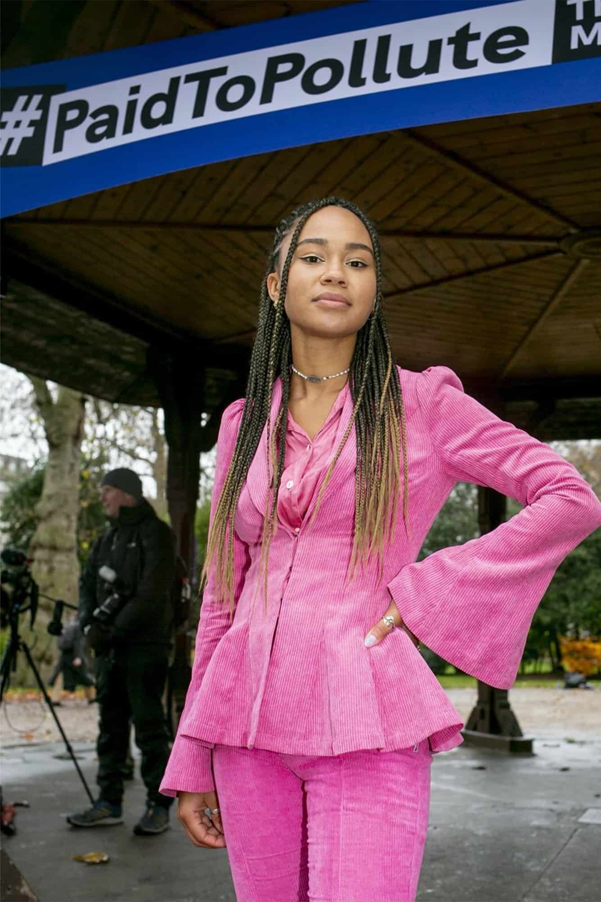

2026.07.07
미카엘라 로치
Mikaela Loach
사라진 해변에서 북해의 법정, 칼레의 국경까지 기후정의를 이어 온 사람이다.
미카엘라 로치의 길을 따라가면 기후위기는 탄소의 문제가 아니라 이동, 식민주의, 병원, 법정, 학교, 국경의 문제로 넓어진다.

2020년 1월, 미카엘라 로치는 오랜만에 자메이카에 갔다. 가족을 보러 간 길이었다. 그는 어릴 때 갔던 해변을 다시 찾았다. 그런데 그 해변은 거의 사라져 있었다.
바다가 밀고 들어온 자리에서 그는 울었다. 그곳은 풍경이 아니었다. 누군가의 집과 가게와 생계가 바다 가까이에 놓인 자리였다. 로치는 그때 영국에 사는 자신에게는 말할 수 있는 통로와 제도가 있지만, 해안 가까이 사는 사람들에게는 같은 힘이 없다는 사실을 다시 보았다고 말했다.
오늘의 인물은 자메이카계 영국 기후정의 활동가이자 작가인 미카엘라 로치다. 그는 자메이카에서 태어나 영국에서 자란 디아스포라의 감각으로 기후위기를 해안, 국경, 병원, 법정, 학교, 책상 위의 정치교육까지 이어 붙여 온 사람이다.
두 개의 지도
로치는 1998년 자메이카 킹스턴에서 태어났다. 어머니는 자메이카인, 아버지는 영국인이었고, 가족은 그가 어릴 때 영국 서리로 옮겨 갔다. 그는 나중에 그 이동을, 디아스포라가 되는 많은 가족들이 그러하듯 더 나은 기회를 찾아 떠난 일로 설명했다.
그의 어린 시절에는 두 개의 지도가 함께 있었다. 하나는 영국의 교실과 마을, 대학으로 이어지는 지도였고, 다른 하나는 집 안에서 계속 전해지는 자메이카의 역사였다. 부모는 학교에서 잘 다루지 않는 이야기를 그와 남동생에게 들려주었다. 그중에는 18세기 자메이카 마룬 공동체를 이끈 여성 지도자 내니 오브 더 마룬스의 이야기도 있었다.
그 이야기가 곧장 그를 기후활동가로 만들지는 않았다. 다만 어떤 일이 멀리서 일어나도 그냥 바라보고만 있지는 못하게 했다. 2004년 인도양 쓰나미가 뉴스에 나왔을 때, 그는 다섯 살이었다. 슬프다고 말하는 그에게 아버지는 무엇을 할 수 있겠느냐고 물었다. 로치는 케이크를 구워 모금했다. 아주 작은 일이었지만, 그에게는 한 가지 감각이 남았다. 무언가를 보았다면, 아주 작더라도 응답할 수 있다는 감각이었다.
생활에서 법정으로
그는 십대 때부터 생활을 바꾸기 시작했다. 열여섯 살 무렵에는 비건이 되었고, 패스트패션을 사지 않으려 했고, 블로그에 글을 썼다. 열여덟 살에는 어머니와 함께 프랑스 칼레의 난민 지원 현장에 갔다. 그곳에서 담요를 접고, 물품을 나누고, 드러나지 않는 일을 하는 사람들을 보았다.
로치가 기후위기를 말할 때 자메이카는 단순한 출생지가 아니다. 그것은 기후위기가 어디에 먼저 닿는지를 보여주는 장소다. 그는 페이드 투 폴루트 소송에 참여하며 자신을 의대생이자 자메이카 디아스포라의 일원이라고 소개했다. 자메이카처럼 과거 식민지배를 받은 저지대 국가는 위기의 원인에는 적게 기여했지만, 더 심각한 피해를 겪고 있다고 했다.
그 말의 배경에는 오래된 불균형이 있다. 영국은 제국의 중심이었고, 자메이카는 식민지였다. 설탕과 노예제, 플랜테이션과 항로, 부의 이동은 오래전에 끝난 과거처럼 보이지만, 그 흔적은 사라지지 않았다. 로치에게 기후위기는 새로 닥친 재난이기만 한 것이 아니다. 누가 오랫동안 땅과 노동과 자원을 빼앗겼는지, 누가 산업화의 이익을 누렸는지, 누가 이제 해수면 상승과 폭풍과 생계 불안을 먼저 겪는지를 함께 보게 하는 사건이다.
에든버러 의대 시절, 그는 생활습관을 바꾸는 일만으로는 충분하지 않다고 느꼈다. 비건이 되고, 패스트패션을 거부하고, 쓰레기를 줄이려 해도 정부와 기업이 계속 화석연료에 돈을 밀어 넣는다면 필요한 변화에는 닿지 못한다고 보았다. 그는 개인적 실천만으로는 부족했고 더 큰 변화가 필요하다고 말했다.
페이드 투 폴루트
그 더 큰 변화 중 하나가 페이드 투 폴루트 소송이었다. 로치와 카이린 반 스위든, 제러미 콕스는 영국 정부와 석유·가스 당국을 상대로 북해 석유와 가스 개발을 둘러싼 세금 혜택과 경제성 판단을 문제 삼았다. 이들은 석유·가스 기업이 받는 세금 혜택을 제대로 계산에 넣지 않는 방식이 더 많은 채굴을 부추기고, 영국의 기후목표와 넷제로 약속을 위태롭게 한다고 주장했다.
그는 스코틀랜드 북해의 캠보 유전 개발을 반대하는 스톱 캠보 운동에도 참여했다. 의대생으로 공부하면서, 거리에서 행동하고, 온라인에서 설명하고, 법정에 서는 시간이 겹쳤다. 그는 정부 청사 앞 도로를 막는 행동에 참여했고, 멸종반란 무대에 몸을 묶은 적도 있다고 말했다.
이 활동에는 언제나 위험이 따라왔다. 로치는 흑인 여성으로서 체포 위험에 자신을 놓는 일이 감정적으로 크고 때로는 상처가 되는 일이었다고 했다. 동시에 그는 자신이 가진 통로도 의식했다. 영국 시민으로서 말할 수 있고, 언론과 연결될 수 있고, 큰 소셜미디어 플랫폼을 가질 수 있는 위치였다. 밝은 피부의 흑인 여성으로서 더 많은 기회를 얻을 수 있음을 의식한다고도 말했다.
그 의식은 그를 멈추게 하기보다, 누구의 목소리를 함께 가져와야 하는지 묻게 했다. 그는 다른 흑인 여성들이 자신을 보고 기후운동에 들어올 수 있다고 느꼈다는 메시지를 받을 때 큰 의미를 느낀다고 했다. 대표자가 되는 일의 위험을 알면서도, 보이지 않던 사람이 입구가 될 수 있다는 가능성도 함께 보았다.
아웨투라는 교실
로치의 자메이카 디아스포라 감각은 영국 안에서 누구와 함께 움직일 것인가의 문제로 이어졌다. 그는 제스 말리와 함께 아웨투 조직학교를 만들었다. 아웨투는 정치교육과 풀뿌리 조직화 도구를 나누는 교육 프로젝트다.
이 학교는 영국의 기후정의와 사회변화 논의에서 흑인들이 자주 배제되어 온 현실을 바꾸기 위해 시작되었다. 기후위기가 다른 투쟁들과 어떻게 연결되는지 공동체가 스스로 이해하고, 자기 언어로 해법을 만들어 갈 수 있도록 돕는 자리다.
아웨투라는 이름은 남아프리카 반아파르트헤이트 구호인 “아만들라 아웨투”에서 왔다. 권력은 우리에게 있다는 뜻의 구호다. 이 학교는 흑인 해방, 기후정의, 식민주의 역사, 반인종주의, 반자본주의, 캠페인 전략, 공동체 조직, 활동가의 웰빙을 함께 다룬다.
여기서 로치의 활동은 더 분명해진다. 그는 기후위기를 설명하는 사람이기보다, 사람들이 스스로 설명하고 조직할 수 있는 자리를 만드는 사람에 가깝다. 기후정의는 전문가의 말로만 남지 않고, 공동체가 자기 삶의 조건을 읽고 바꾸는 도구가 된다.
책과 국경
2023년 로치는 첫 책 『It's Not That Radical: Climate Action to Transform Our World』를 냈다. 책은 기후위기를 빈곤, 자본주의적 착취, 경찰 폭력, 법적 부정의와 함께 다룬다. 출판사는 이 책이 주류 언론 속 기후행동이 백인 중심으로, 자본주의와 잘 맞는 형태로 희석되어 온 현실을 비판한다고 설명한다.
2025년에는 어린이와 청소년을 위한 『Climate Is Just the Start』가 나왔다. 이 책은 기후위기가 어떤 사람들에게 훨씬 더 크게 닿는지, 그리고 그 불공평함 속에서도 아이들이 무력감에만 머물지 않도록 쓴 책이다.
그리고 2026년 1월, 로치는 다시 칼레 국경지대로 갔다. 그는 십대 후반과 이십대 초반에 칼레에서 난민 지원 활동을 했던 기억을 떠올렸다. 장작을 패고, 옷과 텐트 기부품을 분류하고, 뜨거운 음식을 준비하던 일들이었다. 몇 해 뒤 다시 간 칼레에서 그는, 자신과 동행자들이 너무 쉽게 국경을 넘는 동안 영국으로 갈 안전하고 합법적인 통로가 거의 없어 작은 배에 몸을 맡겨야 하는 사람들을 보았다.
그가 남긴 글에는 한 가족의 장면이 있다. 강제 퇴거를 당한 뒤 슈퍼마켓 봉투에 짐을 담아 걷던 젊은 가족, 몸에 아기를 맨 어머니, 스파이더맨 재킷을 입은 아이. 기후활동가로 알려진 사람이 국경에서 본 것은 기후와 별개의 문제가 아니었다. 땅이 살기 어려워지고, 전쟁과 빈곤과 식민주의의 잔해가 사람을 이동하게 만들고, 국경은 그 이동을 위험하게 만든다.
사라진 해변에서 시작된 선
미카엘라 로치의 삶을 따라가다 보면 지명이 계속 바뀐다. 킹스턴, 서리, 에든버러, 런던, 북해, 칼레. 그러나 이 지명들은 단순한 이동 경로가 아니다. 가족의 역사, 사라지는 해변, 의대의 병동, 법정 문서, 도로 위의 시위, 흑인 청년들을 위한 조직학교, 어린이 책의 문장이 그 사이를 잇는다.
로치는 자기 삶의 출발점이 둘 이상이라는 사실을 숨기지 않는다. 자메이카에서 태어나 영국에서 자란 사람, 영국의 제도 안에서 말할 수 있으나 자메이카의 해안에서 먼저 울었던 사람, 한쪽의 권한을 다른 쪽의 사라지는 땅과 연결해 보려는 사람. 그가 말해 온 기후정의는 그런 이동의 흔적 위에 놓여 있다.
그래서 그의 활동은 한 가지 구호로 잘 줄어들지 않는다. 그는 생활을 바꾸었고, 법정에 섰고, 길 위에 앉았고, 교육 프로그램을 만들었고, 아이들을 위한 책을 썼고, 국경에서 사람들의 짐을 보았다. 그 장면들이 함께 놓일 때 기후위기는 비로소 넓어진다. 해수면과 탄소의 문제에서, 누가 떠나야 했고 누가 말할 수 있으며 누가 안전하게 건널 수 있는가의 문제로.
한국어 번역서에 관하여
확인한 범위에서는 미카엘라 로치의 『It's Not That Radical』과 『Climate Is Just the Start』에 대한 한국어 번역서를 찾지 못했다. 현재는 원서와 출판사 공식 소개, 인터뷰 자료를 통해 접근하는 편이 가장 확실하다.
더 읽을 자료
- 보그 인터뷰
자메이카 해변, 페이드 투 폴루트 소송, 스톱 캠보 운동, 큰 플랫폼을 가진 활동가로서의 고민을 확인할 수 있다. - 페이드 투 폴루트 공식 자료
로치가 의대생이자 자메이카 디아스포라의 일원으로 소송에 참여한 이유와, 북해 석유·가스 세금 혜택 문제를 볼 수 있다. - DK, 『It's Not That Radical』 소개
기후위기를 빈곤, 자본주의적 착취, 경찰 폭력, 법적 부정의와 함께 다루는 로치의 첫 책 소개다. - 랜덤하우스, 『Climate Is Just the Start』 소개
어린이와 청소년 독자를 위해 기후위기와 사회적 불평등을 함께 설명한 책이다.